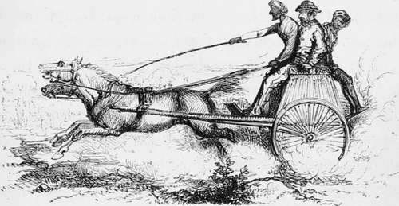

Chapter XIV. Part 3
Description
This section is from the book "Hog Hunting In The East, And Other Sports", by J. T. Newall. Also available from Amazon: Hog Hunting in the East, and Other Sports.
Chapter XIV. Part 3
, "Yes, and not alone in falls from horses," said Melton. " I once got no less than two in one night out of the mail cart between Lahore and Mooltan, and was none the worse of them. You ducks are yet but half civilised, and have not carried the system of dak travelling to the perfection that we have. On every one of our roads dooley bearers can be sent forward, so as to run a man through his journey in no time. And then we have mail carts on all the principal roads, where tattoos or runners suffice for you. However, my object is not to condole with you on your manifest backwardness in this as in other things, but to improve your minds by giving you an insight into our superior arrangements.
Travelling by mail-cart in the Punjaub.
" The mail cart used to run from Lahore to Mooltan, a distance of, I think, 220 miles, in about the twenty-four hours. Not bad travelling that, considering the nature of the road, which was completely unmade, and, in places, a foot deep in dust during the dry weather. The animals, too, which were pressed into the service, contained among them such screws, and beasts so vicious, as to be useless elsewhere. I have seen them hauled into the shafts blindfolded, hobbled, and with ropes attached to their hind-legs to drag them into position. Once in, however, they were bound to go somehow. Occasionally they were run off by the syces in a direction opposite to that intended, then suddenly wheeled round and started with a tremendous whacking and shouting from all concerned in the proper course. This, I observed, was the plan resorted to with confirmed jibbers, perhaps because it was necessary to get them into actual motion, and they had a partiality for any line except the right one. Once set going, they were kept at it, for their six or seven mile stage, at a gallop ; and usually, when fairly started, they did their best to reach the end of their journey.
" Eearing was nothing out of the way. And then we had kickers, and I was once slightly struck on the knee by the heels of a brute coming above the place in front where the splash board ought to have been. Our artillery system, so much superior to yours"
" What ? " suddenly broke in Stewart. " Your artillery system superior to ours! My good fellow, allow me to suggest that you stick to what you know something about. I believe it is unquestioned that our artillery system, both of harness, and carriage of men, is" Oh ! they are both splendid ; don't know which is best," said Mackenzie, from inside, interrupting what he feared might be a bone of contention. " As Presi-dent, I most positively forbid all shop. We have not met here to discuss professional matters. Drive a-head, Melton." This decision was received with approbation, as testified by several ' hear, hears.'
"Do as I was done by," was the reply to the last appeal. " Well, then, the two horses were harnessed according to the fashion obtaining in the old Bombay artillery. That is to say, instead of the pair being placed one on each side of a pole, the one was in the shafts, and the other harnessed outside; but whether the system was good or bad, they took us along at a pace considerably over ten miles an hour. Including stoppages, it was not much less.
" I leave it for you fellows to fancy what that rate is over an unmade country road, simply cleared from the jungle, with occasional root-stumps, dips, mounds, watercourses, and numerous obstructions of the same nature. Gad, sir! my back and sides ache with the very remembrance of the twenty-six consecutive hours I thus employed in being jolted, and bumped, and being fearfully punished by the iron hand-rail at my back. And all, remember, was on a sort of two-wheeled dog-cart whose springs were of the stiffest.
"Fortunately, I had just returned from a trip to Cashmere, and was in capital condition, and so to save my leave, I went the through journey at once. But, oh! wasn't I stiff next day ! Sitting upright for so long on the very hardest of cushions, on such a road, is rather trying ; but still the carts are a great institution, and enable a fellow to get over the ground speedily. On the main arteries, where the roads are for the most part made, it is a much more pleasant way of travelling.
" Naturally, bits of harness are constantly giving way, and other mishaps occurring, where the originally rotten nature of the fabric is so severely tested. But perhaps the worst to be expected is the collapse of the belly-band of the horse in the shafts. That is the only strap or ligature which prevents the cart from tilting back, consequently an accident to it may be invested with serious consequences.
" I had left Lahore about 10 a.m., in the morning of a November day, and in the middle of the following night was drowsily holding on to the side-rails to keep myself as fixed as possible, when a see-saw motion of the vehicle proclaimed something amiss. The driver at the same time discovered and recognised the fault, and pulled up his horses as quickly as he could. But before this was accomplished the shafts rose, and thinking we were tilting back, we both thrust ourselves forward, and the assistant guard of her Majesty's mails, who sat behind, jumped off. This brought us down again, and half projected, half jumping, I was shot out into the road as the horses were brought up.
" Alighting on soft ground there was no damage done ; but we were, unfortunately, in the very middle of a stage in a wild part of the country where villages were not passed for miles. The dak stations, indeed, were often the only signs of habitation in the sterile Rechna Doab.
" There was nothing for it but to mend the broken belly-band by such means as were at our disposal; and these consisted of a knife and a piece of doubtful-looking rope. By the light of a half-moon, the driver and his assistant set to work, while I threw myself on the ground, and was immediately asleep. How sweet the short rest! But, ah! how unpleasant the arousing! —a brief pleasure and pain I had undergone at several of the dak stations during the change of horses.
Continue to: